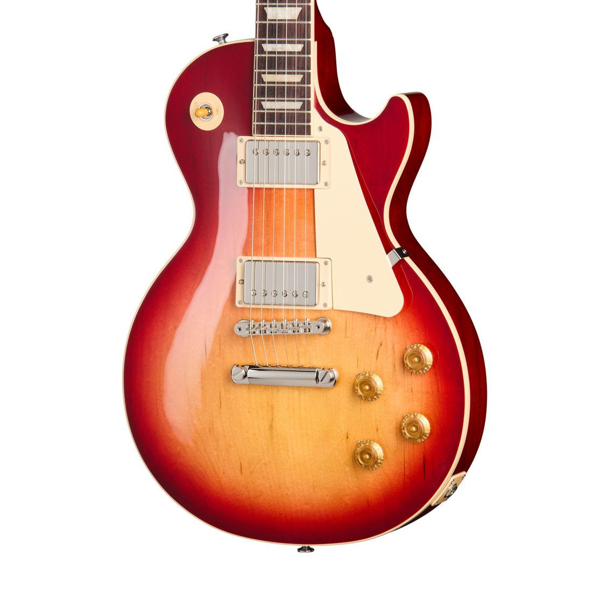
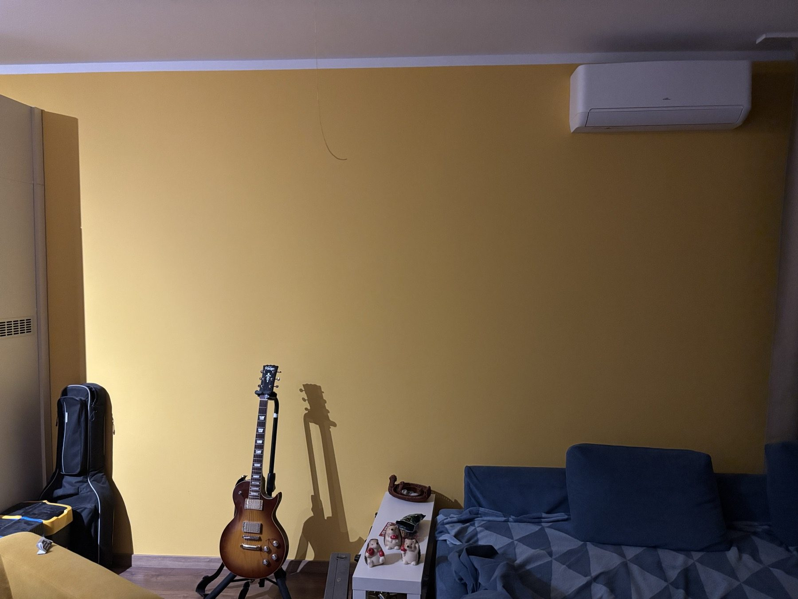
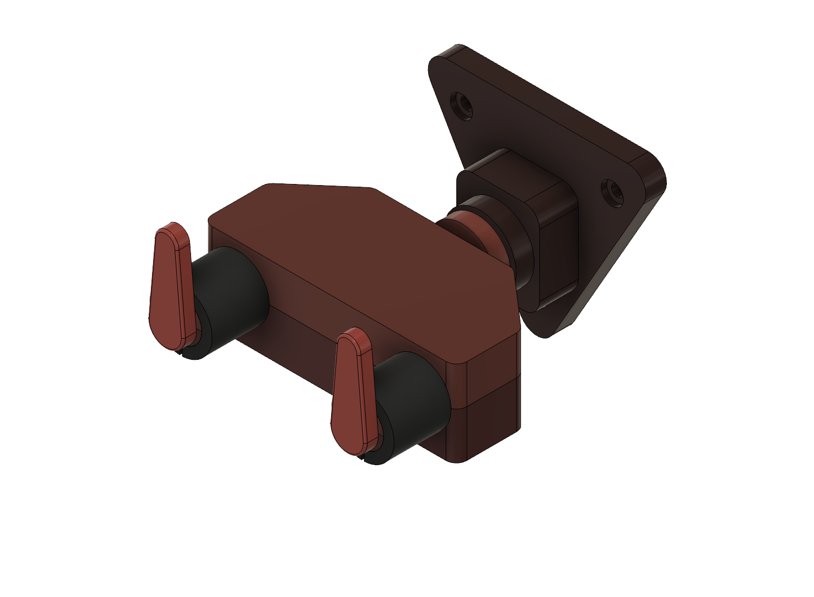
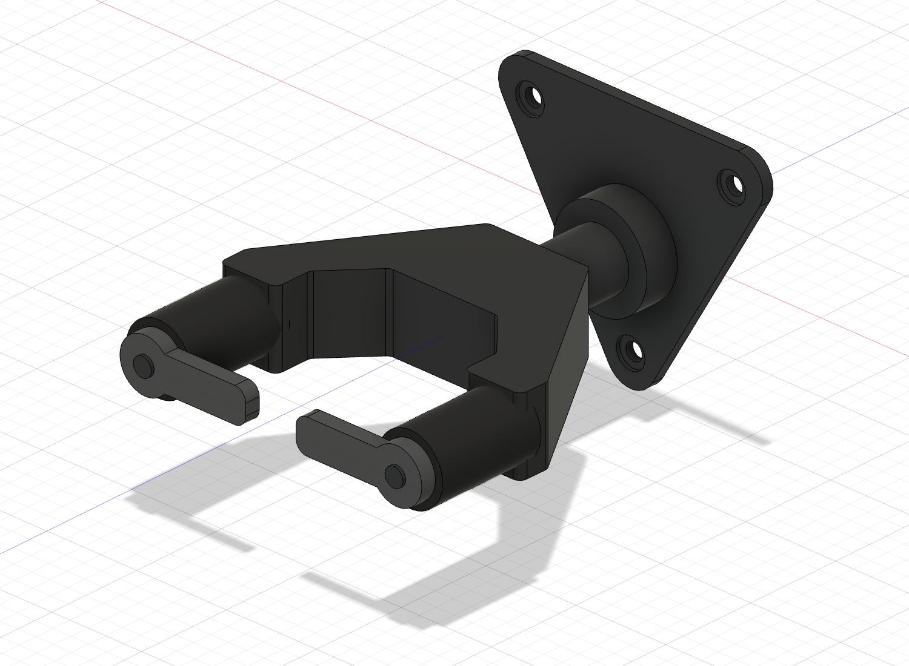
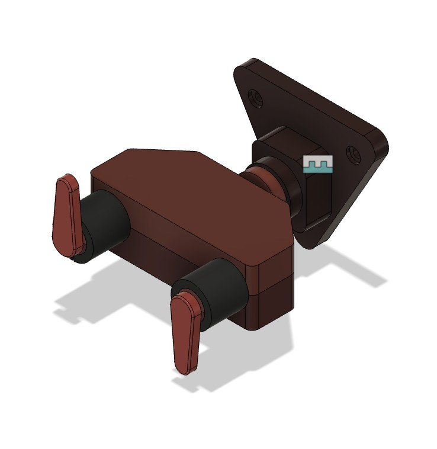

Megtervezni.
Videókból és képekből indulunk ki, majd Fusionben megtervezzük a saját gitártartónkat. Közben kipróbáljuk, hogyan mozog.
AUTODESK FUSIONSAJÁT ÖTLET. ÚJ ESZKÖZÖK. TÖBB HELY.
Egy menő autolockos gitártartót tervezünk.
Közösen, AI segítséggel — a zsúfolt sarok helyett.

01 / AZ ÖTLET

Otthon egyre több a gitár, és egyre kevesebb a szabad hely. A következő lépés: fel a falra — úgy, hogy a hangszerek biztonságban legyenek, és jól is mutassanak.
Megtaláltuk a nekünk tetsző autolockos tartót, de drágának érezzük ahhoz, hogy egyszerűen megvegyük. Inkább megtanuljuk, hogyan tervezzünk sajátot. Ketten dolgozunk a projekten, az AI segítségével.
02 / A TERVEZÉS MOZGÁSBAN
03 / TANULÁS AI-JAL
Egyetlen projekt.
Három új terület.
Videókból és képekből indulunk ki, majd Fusionben megtervezzük a saját gitártartónkat. Közben kipróbáljuk, hogyan mozog.
AUTODESK FUSIONEgy rövid videóban meséljük el, hogyan jutunk el az ötlettől a kész modellig.
KÉPERNYŐFELVÉTEL + VÁGÁSEzen az oldalon gyűjtjük össze a modellünket, a videónkat és azt, amit közben megtanulunk.
WEBOLDAL + PROJEKTNAPLÓ04 / JÁRD KÖRBE

Járd körbe az elkészült modellt, vagy töltsd le STEP-formátumban. A valódi prototípus működését és terhelhetőségét még kipróbáljuk.
05 / A KÖZÖS MUNKA
Videókból és terméklinkekből indultunk ki. Ezek alapján lépésről lépésre értettük meg a szerkezetet, majd az AI segítségével szerkeszthető Fusion-modellt építettünk.
A tervezés folyamata ↗„Segíts nekünk Fusionben modellezni egy ilyen gitártartót. A modellt új fülön szeretnénk felépíteni.”
Az elképzelésünket ezután terméklinkkel és egy újabb videóval pontosítottuk. A részletes prompttörténetet és a tanulságokat itt bővítjük majd tovább.
VIDEÓ → REFERENCIA → MODELL → ELLENŐRZÉSPRODUCT TEAM / MŰHELYNAPLÓ
Hogyan jutunk el egy hétköznapi problémától a saját 3D modellünkig?
Referenciák, döntések, próbálkozások és tanulságok.
A gitároknak új helyet keresünk. Egy falra szerelhető, automatikusan záródó tartó saját változatát szeretnénk megtervezni. A forma megértéséhez egy Hercules GSP39WB Plus terméklinket és két bemutatóvideót használtunk referenciaként.
A fali konzolt, a csúszóvillát és a zárómechanikát külön alkatrészekből építettük fel Fusionben. A hat nyomtatandó elem és a vásárolt alkatrészek listáját a Mellékletek fülön gyűjtöttük össze.
A zárófülek szemléltető mozgását kipróbáltuk. A méretek egy részét fotókról becsültük, ezért a modellünket továbbra is ellenőrzést igénylő prototípusként kezeljük.

A belső mechanika kidolgozása. A Fusion-modell első változatából kimaradt a belső mechanika. Ezt az AI nem ismerte fel magától: külön rá kellett vezetnünk, hogy ezt a részt is dolgozza ki.
A vázlat túlkényszerezése.
Az ismételt koordinátaméretekre a Fusion vázlatmegoldója túlkényszerezést jelzett. Az azonos koordinátákhoz közös geometriai kényszereket használtunk; a megoldást külön ideiglenes vázlaton ellenőriztük.
A ház profiljánál a vázlatsík irányát is korrigáltuk. A javítás után külön ellenőriztük a mozgást és a paraméterek módosíthatóságát.
Hibás fülpálya. A zárófülek pályája rosszul volt kényszerezve. A fülek mozgását a terhelési lökethez kötött csap–horony kényszer vezérli. A hibás beállítás miatt a két fül nem együtt, tükörszimmetrikusan mozdult: az egyik oldalra kifordult, a másik szinte függőleges maradt.

Véglegesítjük a STEP-modellünket, elkészítjük a tervezést bemutató videónkat, és részletes promptnaplóba gyűjtjük a tapasztalatainkat. A leadási anyagunkat a projekt haladásával töltjük fel.
A prototípusunkat szeretnénk kézbe is venni: az a célunk, hogy Tomi 3D nyomtatással elkészíthesse. Ezért az alkatrészeket a nyomtathatóság szempontjait figyelembe véve terveztük át, hogy a digitális modellből fizikai prototípus is készülhessen.
Megmértük, mennyi időbe telt a projekt. Az aktív idő a mi kérdéseink, döntéseink és ellenőrzéseink ideje. A passzív időben az AI önállóan modellezett, exportált, renderelt vagy kódot írt, mi pedig közben mással foglalkoztunk.
| Szakasz | Aktív | Passzív | Összesen |
|---|---|---|---|
| Honlap felépítése és modellezés (nov. 2.) | 0:40 | 3:20 | 4:00 |
| Fusion MCP-csatlakozó beállítása | 0:15 | 0:05 | 0:20 |
| AGS v3 modell, PETG, bordó színek, ábra, BOM | 0:12 | 0:32 | 0:44 |
| Videó tervezése és renderelése | 0:08 | 0:24 | 0:32 |
Már az első napon is ez volt a minta: a 4 órás honlap- és modellezési munkából mindössze 40 perc volt aktív, 3 óra 20 perc passzív. A részleteket a Mellékletek fülön lévő projektriport tartalmazza.
Visszanéztük a teljes folyamatot: hol vesztettünk időt, és mitől lett volna gördülékenyebb a munka. A legfontosabb tanulság: minél jobban előkészítjük a terepet, annál többet dolgozhat helyettünk önállóan az AI.
Mit tartanánk meg? A felosztást: mi döntünk, az AI végrehajt, a végeredményt közösen ellenőrizzük. Így lett a munka 78%-a passzív.
02 / ÍGY ÁLL ÖSSZE